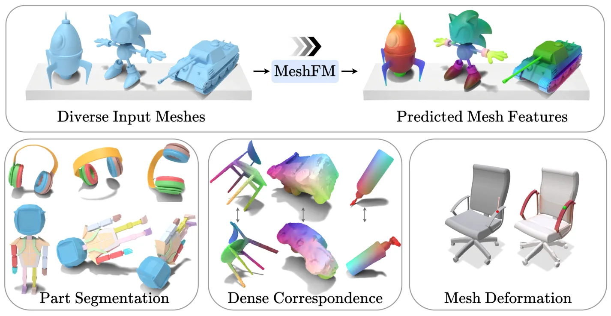
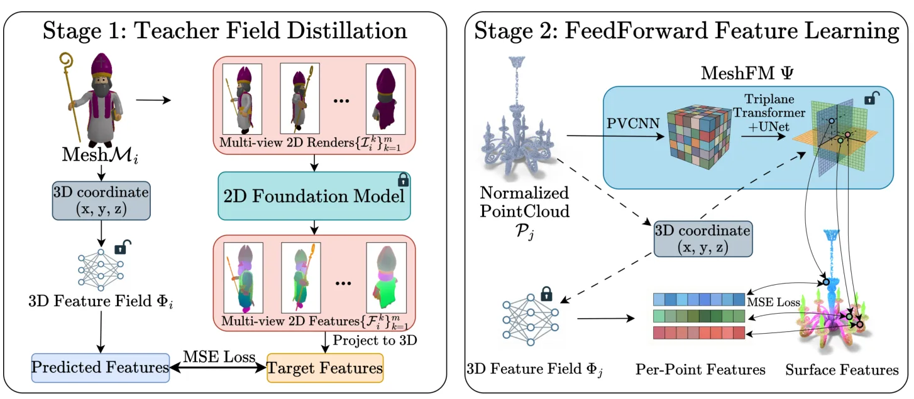
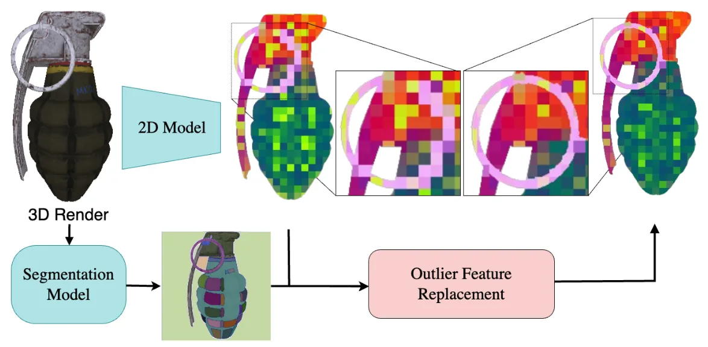
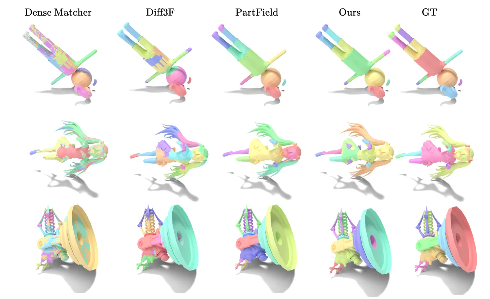
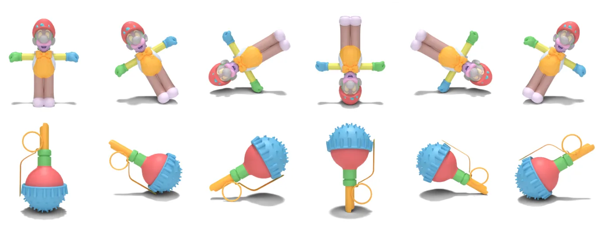
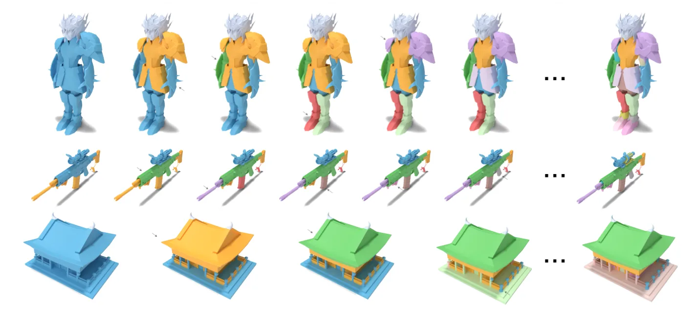

MeshFM：仅用二维特征学习三维形状表征MeshFM: 2D Features Are All You Need for 3D Shape Understanding
稠密对应与鲁棒三维特征对配准和重建后处理有潜在价值，且不需三维标签；摘要未展示其在真实扫描噪声和跨域配准上的直接结果。
一句话工作总结
从二维基础模型蒸馏三维 feature field，再以前馈网络直接预测，可零三维标注服务对应、分割和网格变形。
摘要
MeshFM 将视觉 foundation models 的二维特征蒸馏到三维输入。第一阶段仅凭多视图二维特征监督优化三维 feature field，第二阶段训练 feedforward network 直接回归该特征场，从而在推理时无需逐对象优化或三维标注。所学特征可直接用于部件分割、稠密对应和 mesh deformation；作者称其性能可达到显式三维监督方法的水平，并对输入物体的极端旋转保持鲁棒。
We present MeshFM, an efficient feedforward framework for extracting rich features from 3D inputs. Our method distills 2D features from visual foundation models into 3D. We train a feedforward network to directly predict 3D features without requiring optimization during inference. The approach utilizes a two-stage training strategy. First, we optimize a feature field in 3D using only 2D feature supervision. Second, we train a network to regress this feature field. The entire procedure requires no 3D annotation, instead relying on the powerful information in 2D foundation models. We demonstrate that our learned features can be immediately applied to downstream tasks, including part segmentation, dense correspondence, and mesh deformation. Extensive experiments show that MeshFM, trained solely with 2D supervision, performs on par with methods trained explicitly with 3D supervision, even without task-specific fine-tuning. Moreover, our model is trained to be robust to extreme rotations of the input objects. Project page: https://threedle.github.io/MeshFM/
中文解读摘录
- 作者：Jinfan Zhou, Richard Liu, Itai Lang, Rana Hanocka
- 价值判断：先以二维 foundation features 监督三维 feature field，再训练 feedforward network 直接预测，可在没有三维标注和逐对象优化的条件下提供部件分割、dense correspondence 和 mesh deformation 特征。
- 结果与边界：摘要称仅二维监督即可达到显式三维监督方法水平，并对极端旋转鲁棒。对点云配准最有潜力的是 dense correspondence，但需验证真实扫描噪声、非重叠视野、跨类别与大场景表现。
- 链接：arXiv · PDF · 项目页
图表/页面预览
{kind=link}

{kind=link}

{kind=link}

{kind=link}

{kind=link}

{kind=link}
